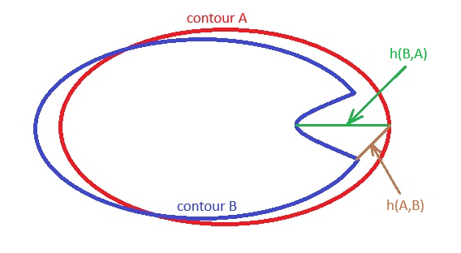
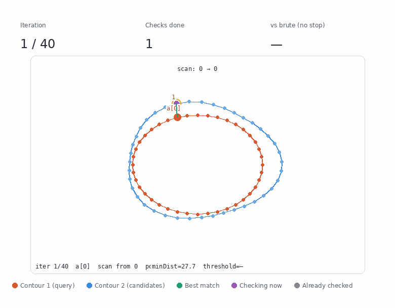
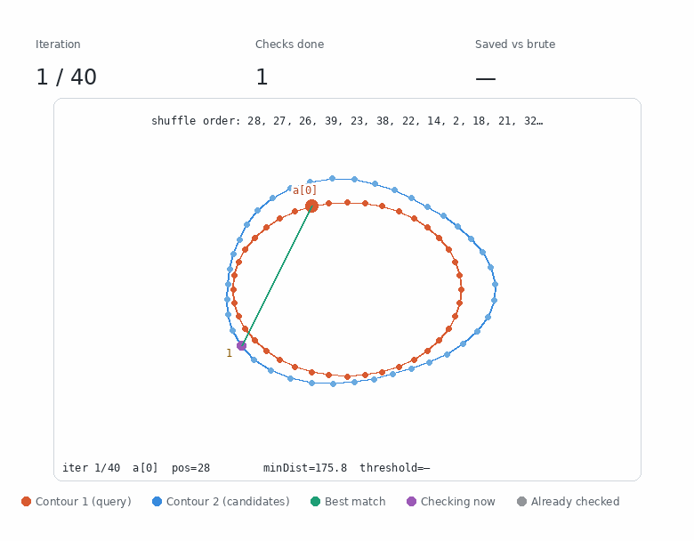
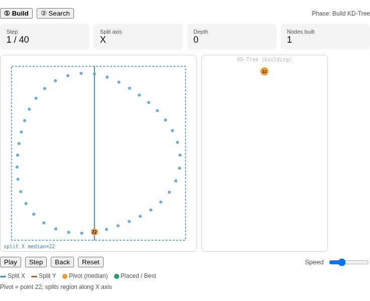
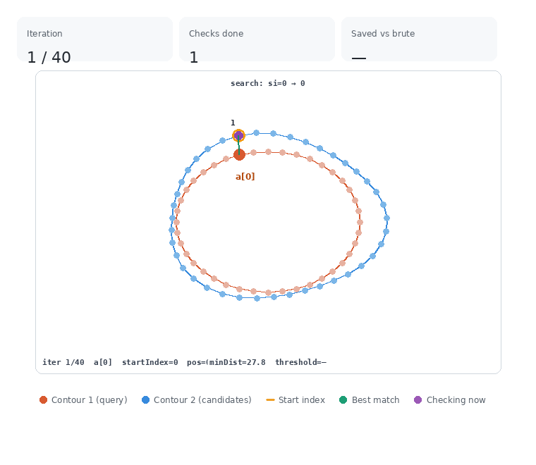

Exact Hausdorff distance • C++ • ordered contours
Speeding Up Exact Hausdorff Distance by 10x+ on Ordered Contours
While implementing a new C++ algorithm for defect detection, I ran into a performance problem: we needed to compute the Hausdorff distance between contours many times.
The contours were ordered sequences of points extracted from binary images. The task involved comparing many contours and grouping similar ones based on the Hausdorff distance.
Before getting to the optimization I ended up using, let’s briefly recall how Hausdorff distance is computed and what common optimizations already exist.
Classic Hausdorff distance: brute force
Suppose we have two contours, A and B. For each point A[i], we find the closest point in contour B. Let that point be B[j]. Then:
D[i] = distance(A[i], B[j])After computing all these minimal distances, we take the maximum:
h(A, B) = max(D[0] ... D[n - 1])This is the directed Hausdorff distance. In general, h(A, B) can differ from h(B, A), so the symmetric Hausdorff distance is usually computed as:
H(A, B) = max(h(A, B), h(B, A))
h(A, B) and h(B, A).The naive implementation follows the definition directly: for each point of the first contour, scan all points of the second contour. If the contour sizes are n and m, one directed pass takes O(n * m), and the symmetric distance requires two such passes.

A[i], all points of B are checked.Interactive brute force visualization on GitHub
The brute-force approach is simple and exact. But as soon as contours contain many points and we compare many contour pairs, it becomes expensive. For our task, it was too expensive.
directedHausdorff(A, B):
maxMin = 0
for a in A:
minDist = infinity
for b in B:
minDist = min(minDist, distance(a, b))
maxMin = max(maxMin, minDist)
return maxMinBrute force with early break
If we need the exact maximum distance, we can still apply a common early-break optimization.
During the inner loop, if the current minDist for A[i] has already become less than or equal to the current maxMin, then this point A[i] cannot increase the final directed Hausdorff distance anymore. So we can stop checking the remaining points of B for this A[i].
This does not change the result. The distance remains exact. We simply stop checking candidates that are already guaranteed not to affect the final maximum.

maxMin.Interactive brute force + early break visualization on GitHub
Early break gives a substantial speedup. But for our task, it was still not enough.
directedHausdorffEarlyBreak(A, B):
maxMin = 0
for a in A:
minDist = infinity
for b in B:
d = distance(a, b)
minDist = min(minDist, d)
if minDist <= maxMin:
break
maxMin = max(maxMin, minDist)
return maxMinShuffling + early break
Another known idea is to change the traversal order of the points, for example by randomly shuffling contours A and B.
The intuition is simple: if we visit points in a different order, we may encounter a point that triggers the early break sooner. This can be especially helpful in later iterations, when finding a distance below the current threshold may otherwise require scanning almost the whole contour.
This approach often works well for very different shapes. But it has a cost: it requires additional memory for shuffled contours, extra work for the shuffle itself, and less predictable running time because the number of checks depends on the random traversal order.
A similar idea is used, for example, in SciPy’s directed_hausdorff, where points are randomly shuffled to improve the efficiency of early termination.

Interactive shuffle + early break visualization on GitHub
For our task, the final speed, including memory allocation and shuffling overhead, was still not good enough for release.
KD-tree baseline
Another natural way to speed up Hausdorff distance is to use a KD-tree.
The idea is to avoid scanning all points of contour B for every point A[i]. Instead, we first build a spatial index over the points of B. A spatial index is a data structure for faster coordinate-based search. In the case of a KD-tree, points are recursively split by x, then by y, then by x again, and so on, forming a tree.
After that, the nearest neighbor for A[i] can be found by walking through the tree and pruning regions where a closer point cannot exist.
Building the tree takes about O(m * log m) and requires additional memory O(m). In good cases, nearest-neighbor search is much faster than brute force and is often close to O(log m). So the directed Hausdorff distance may look like:
O(m * log m + n * log m) in good cases, which is much better on paper than the O(n * m) worst case of the previously discussed methods.

Interactive KD-tree build/search visualization on GitHub
But there are two important caveats:
- First, nearest-neighbor search in a KD-tree does not have the same simple
O(log m)guarantee as key lookup in an ordinary balanced tree. During search, the algorithm first descends into the most promising branch, but it may still need to check neighboring branches: a closer point may be hiding on the other side of a split line. - Second, practical KD-tree implementations often use approximate nearest-neighbor search for speed. In that case, not all potentially relevant branches are checked. The nearest neighbor may be approximate rather than exact. This is acceptable for many tasks, but for defect detection I needed exact Hausdorff distance.
On favorable data, the tree prunes many regions and search is close to O(log m). On unfavorable data, pruning may be weak: points may be distributed awkwardly, the tree may be poorly balanced, the query point may lie close to split boundaries, or the nearest neighbor may be across several split lines. Then the algorithm may need to visit many nodes, and in the worst case almost all points.
Contour points may be a less convenient case for KD-trees: they lie on a thin curve in 2D space instead of filling the area uniformly. Because of that, geometrically close points can end up on different sides of split lines, and exact search may need to inspect more neighboring branches.
In practice, this confirmed my suspicion: tree construction added noticeable overhead, and approximate nearest-neighbor search affected accuracy. For defect detection, even small differences in the final Hausdorff distance were not acceptable.
As a result, the KD-tree baseline was significantly worse than shuffling + early break for my use case.The key observation
So we ended up in an interesting situation.
Brute force was too expensive. Early break helped, but still checked points in a fixed order. Shuffling helped early break, but required extra memory and extra work. KD-tree sped up nearest-neighbor search in a general sense, but required an additional data structure and did not use the order of contour points.
But in our task, the points were already ordered.
If A[i] corresponds to some point B[j], then for the next point A[i + 1], the nearest point is often somewhere near B[j], not at a completely arbitrary location on the contour.
This observation led to the main optimization.
The new contour-coherent optimization
The main idea is: for each point A[i], we do not start the search from index 0 in contour B. Instead, we start from:
startPoint = closestPrevious + 1where closestPrevious is the point in contour B found on the previous iteration for A[i - 1].
The distance from A[i - 1] to B[closestPrevious] is either the current maxMin, or smaller if the previous iteration ended early.
Then we scan points on contour B to the left and to the right of startPoint, in this order:
startPoint, startPoint - 1, startPoint + 1, startPoint - 2, startPoint + 2, ...If one direction reaches the boundary, we continue only in the opposite direction.
The goal is to trigger the early break earlier. We do not build a tree, we do not allocate additional shuffled arrays, and we do not change the exact result. We simply traverse B in a better order.

bestIndex.Interactive contour-coherent visualization on GitHub
The visualization shows that on “descents” and after the global maxMin, many iterations behave almost like constant-time operations in terms of distance checks.
directedHausdorffContourCoherent(A, B):
maxMin = 0
startIndex = 0
for i in 0 .. A.size - 1:
minDist = infinity
bestIndex = startIndex
for j in indicesAround(startIndex, B.size):
d = distance(A[i], B[j])
if d < minDist:
minDist = d
bestIndex = j
if minDist <= maxMin:
break
maxMin = max(maxMin, minDist)
startIndex = bestIndex + 1
return maxMinindicesAround(startIndex, size) returns indices in this order:
startIndex, startIndex - 1, startIndex + 1, startIndex - 2, startIndex + 2, ...Obvious and simple? Very much so.
I implemented it, tested it locally on small packages, and the result looked excellent. The next day, testers were surprised: the performance problem had disappeared. The speedup was more than 10x.
I searched for this exact optimization but could not find it. So I thought: maybe it could be useful beyond this specific task? I wrote benchmarks and tested it on different image datasets.
How the tests were performed
Image packages
The tests used binary images with a foreground object and a background. Some images were generated, and some came from standard Computer Vision datasets, such as MPEG7, Kimia99, and Kimia216. The tables below show a subset of the results, chosen to demonstrate the general behavior of the algorithms on different types of contours.
Preprocessing: contour extraction
For each image, a contour was extracted using OpenCV findContours with CHAIN_APPROX_NONE, meaning the contour was not simplified. If multiple contours were found, the largest contour was selected for the benchmark.
Hausdorff distance computation
Inside each dataset, all contours were compared pairwise. For all exact algorithms, I used the same extracted contours and the same distance function. The tables below use the Euclidean metric.
Compared algorithms:
- Contour-Coherent - the new optimization;
- Shuffling + early break;
- Brute force + early break;
- Boost.Geometry - mostly as a reference implementation for correctness;
- KD-tree - tree construction using OpenCV FLANN.
For Contour-Coherent, Shuffling + early break, and Brute force + early break, I added a checks counter. A check means one distance computation between two points. It is not the full runtime, but it is a useful measure of the main algorithmic work. Runtime also depends on allocations, cache behavior, shuffling overhead, auxiliary structures, and implementation details.
Benchmarks
The benchmark measured median time for processing all contour pairs in the package, average time for processing the package, median time per Hausdorff distance, total number of checks in the package, average number of checks per pair, and average Hausdorff distance used as a correctness check.
Results: where the method works best
1. Best case: very close contours
This is the scenario closest to the original task: defect search and small local differences. The contours are geometrically close, local differences are small, and the overall point order is preserved.
Examples: WalkingSilhouette, SmallDeformations, SyntheticDefects, SmallContoursDefects.
Here the speedup was about 2.2x to 14.5x compared with shuffling + early break, and more than 14x to 77x compared with brute force + early break.
2. Good case: similar contours with larger differences
Examples: MPEG7/children, MPEG7/chopper, MPEG7/car.
Here the speedup was about 1.3x to 5x compared with shuffling + early break, and about 10x to 12x compared with brute force + early break.
3. Complex but still suitable case
Some contours have similar structure but complex geometry. For example, snowflakes or other detailed shapes.
If point order still preserves locality, the contour-coherent approach works well. On the Snowflake dataset, the speedup was about 2.5x compared with shuffling + early break and about 170x compared with brute force + early break. In such cases, if the traversal order is bad, the cost can become catastrophic.
Where the algorithm was less successful
- On mixed or less consistent datasets, such as
MPEG7/phone,Kimia99, andKimia216, shuffling + early break was sometimes more successful. Still, contour-coherent traversal remained about3xto7xfaster than brute force + early break. - For very different contours, for example
MPEG7/Mix, shuffling + early break was about4xfaster. But even there, contour-coherent traversal remained about3xfaster than brute force + early break. This is an important limitation: if the nearest point forA[i + 1]is often not near thebestIndexfrom the previous iteration, the advantage of contour-coherent traversal decreases.
CC = Contour-Coherent, BF+EB = brute force + early break. Green cells show cases where contour-coherent wins. Orange cells show cases where shuffling + early break is faster.
| Batch | Avg HD, px | CC, ms | Shuffle, ms | BF+EB, ms | CC vs Shuffle | CC vs BF+EB |
|---|---|---|---|---|---|---|
| WalkingSilhouette (20 contours, 4410-4430 points) | 14.56 | 58.01 | 839.01 | 4514.66 | 14.46x | 77.8x |
| SmallDeformations (20 contours, 2826-2882 points) | 24.64 | 51.06 | 124.48 | 1664.24 | 2.44x | 32.60x |
| SyntheticDefects (20 contours, 970-1032 points) | 18.13 | 12.95 | 28.60 | 208.38 | 2.21x | 16.09x |
| SmallContoursDefects (20 contours, 274-280 points) | 3.32 | 1.15 | 8.37 | 16.15 | 7.29x | 14.06x |
| Snowflake (12 contours, 23512-28171 points) | 55.31 | 247.73 | 598.25 | 42546.30 | 2.41x | 171.7x |
| MPEG7/children (20 contours, 387-390 points) | 4.22 | 3.29 | 14.73 | 33.06 | 4.48x | 10.1x |
| MPEG7/chopper (20 contours, 637-831 points) | 19.94 | 8.55 | 15.93 | 97.50 | 1.86x | 11.4x |
| MPEG7/car (20 contours, 406-558 points) | 27.68 | 6.78 | 9.17 | 46.07 | 1.35x | 6.8x |
| MPEG7/phone (20 contours, 790-1102 points) | 48.17 | 24.98 | 16.89 | 171.52 | 0.68x | 6.9x |
| MPEG7/Mix (20 contours, 336-1960 points) | 268.55 | 77.03 | 17.68 | 247.66 | 0.23x | 3.2x |
| Kimia99 (99 contours, 125-605 points) | 41.1 | 124.26 | 118.84 | 488.57 | 0.96x | 3.9x |
| Kimia216 (216 contours, 245-675 points) | 48.72 | 797.72 | 570.33 | 2670.93 | 0.71x | 3.3x |
| Batch | CC checks | Shuffle checks | BF+EB checks | Checks saved vs Shuffle | Checks saved vs BF+EB |
|---|---|---|---|---|---|
| WalkingSilhouette | 216.1k | 3460.8k | 19561.5k | 16.02x | 90.5x |
| SmallDeformations | 225.9k | 498.5k | 7984.5k | 2.21x | 35.35x |
| SyntheticDefects | 52.7k | 102.9k | 993.5k | 1.95x | 18.86x |
| SmallContoursDefects | 2.7k | 29.9k | 74.7k | 10.96x | 27.42x |
| Snowflake | 3270.1k | 7513.8k | 595772.5k | 2.30x | 182.2x |
| MPEG7/children | 7.1k | 57.6k | 152.5k | 8.17x | 21.6x |
| MPEG7/chopper | 32.7k | 50.4k | 465.3k | 1.54x | 14.2x |
| MPEG7/car | 24.3k | 25.0k | 213.7k | 1.03x | 8.8x |
| MPEG7/phone | 108.6k | 47.7k | 807.1k | 0.44x | 7.4x |
| MPEG7/Mix | 346.4k | 45.1k | 1168.2k | 0.23x | 3.4x |
| Kimia99 | 18.0k | 9.7k | 87.6k | 0.54x | 4.9x |
| Kimia216 | 26.0k | 10.3k | 100.7k | 0.39x | 3.9x |
Why Boost.Geometry and KD-tree are not in the main tables
I do not include Boost.Geometry and KD-tree/OpenCV FLANN as main baseline algorithms in the comparison tables for the following reasons.
Boost.Geometry. I used Boost mainly as a reference implementation to verify correctness. It computes the same exact discrete Hausdorff distance, but it does not expose the number of distance checks, so it is not convenient for the checks/HD comparison. It was also noticeably slower than the other exact baselines, so I kept the main table focused on the more informative comparison: contour-coherent, shuffling + early break, and brute force + early break.
KD-tree. KD-tree was used as a practical nearest-neighbor baseline. The implementation used OpenCV FLANN. In the end, its Avg HD value differed from the other algorithms, so this baseline was not strictly exact. For a defect-detection task, this is critical. In addition, in an all-pairs comparison, the tree has to be built many times. This adds overhead and requires extra memory. As a result, this baseline was also slower than the algorithms included in the main table.
Both baselines are implemented in the GitHub project and can be run together with the other algorithms.
Summary of results
The Contour-Coherent algorithm not only passed a real-world “battle test” in a high-load application but also performed well on different image datasets.
- On close and similar contours, it gives a stable speedup over shuffle: from
1.3xto14xin runtime. Compared with BF + early break, the win is even larger: from6.8xto171xin runtime and from8.8xto182xin distance checks. - On non-target data, the result is weaker, as expected: if contours are very different or local correspondence between neighboring points breaks down, shuffling + early break may be faster. But even in these cases, contour-coherent traversal remained faster than BF + early break.
Time complexity
In the worst case, the contour-coherent algorithm does not change the asymptotic complexity: directed Hausdorff distance may still require O(n * m) checks, and the symmetric distance requires two such passes.
This is expected. The algorithm does not build a spatial index, does not use a lower bound to eliminate entire regions, and does not mathematically discard candidates. It remains an exact algorithm and only changes the traversal order of points in B so that early break is triggered sooner.
But on suitable contours, the practical behavior is very different.
If neighboring points in A usually correspond to neighboring or nearby points in B, then the nearest point for A[i + 1] is often near the bestIndex found for A[i]. So the search starts almost at the right place.
In such cases, the algorithm does not need to scan the whole contour B. It checks a few nearby candidates, the current minDist becomes less than or equal to the already found maxMin, and early break is triggered.
This is especially visible on “descents” after a local maximum distance. When maxMin is already large enough, for many subsequent points it is not necessary to find the true minDist all the way to the end. It is enough to quickly find any point B[j] whose distance is already below the current maxMin. After that, the current point A[i] is guaranteed not to increase the Hausdorff distance, and the inner loop stops.
After the dominant maximum Hausdorff distance for a pair of contours has been found, many subsequent iterations on similar contours start behaving almost like constant-time operations: a few checks around startIndex, then early break.
That is why I show checks/HD separately in the table. The formal worst-case complexity remains O(n * m), but on data with good locality the actual number of distance checks drops sharply.
If the contour point order is shuffled or the contours are poorly aligned, the advantage decreases. In that case, the algorithm remains exact, but the number of checks may approach brute force + early break.
Conclusions
- The main practical observation is simple: an ordered contour is not just a set of points. The point order already contains useful geometric information, and we can use it.
- The contour-coherent algorithm uses this information in a very cheap way. It does not build a KD-tree, does not allocate arrays for shuffling, does not change the result, and does not turn exact Hausdorff distance into an approximation. It simply starts searching near the location where the closest point was found on the previous iteration.
- Across the tested datasets, the algorithm was always faster than ordinary brute force + early break. In the most suitable scenarios - close contours, small deformations, synthetic defects, walking silhouettes - the speedup was
14xto77xin runtime compared with brute force + early break. On Snowflake, it reached171x, because the fixed traversal order was especially bad. - Compared with shuffling + early break, the result depends on the data. On close and consistent contours, contour-coherent traversal was about
2.2xto14.5xfaster in runtime. In terms of distance checks, the win on such datasets was about2xto16x, and almost11xonSmallContoursDefects. These are exactly the cases where point order helps predict where the nearest candidate is likely to be. - On mixed or poorly aligned datasets, shuffling + early break can be faster. This is expected: if the nearest point for
A[i + 1]is often not near thebestIndexfrom the previous iteration, the contour-coherent assumption loses its main advantage. But even in these cases, contour-coherent traversal remained about3xto7xfaster than ordinary brute force + early break. - This is not a universal algorithm for arbitrary point clouds. But for its class of tasks - similar ordered contours, local defects, small deformations, binary masks - contour-coherent traversal gives a rare combination: simple implementation, exact result, no additional data structure, and a large practical speedup.